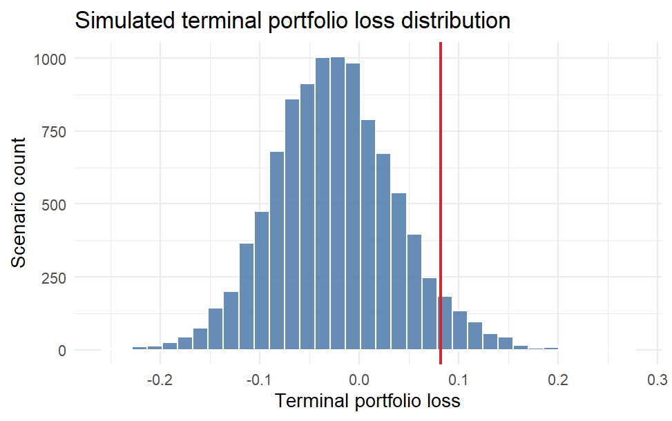

scenario2risk estimates downside portfolio risk from simulated macro-financial scenarios. The package combines principal component analysis with a factor-augmented VAR model to generate future equity, bond, and cash return paths, then summarizes terminal-loss risk and rolling VaR exceedance diagnostics.
It is designed for a simple three-asset setting with equity, bond, and cash weights, and focuses on two practical tasks:
- estimating terminal portfolio loss risk from simulated macro-financial scenarios
- checking how often scenario-based VaR is exceeded relative to realized historical outcomes
Installation
You can install the development version from GitHub with:
# install.packages("devtools")
devtools::install_github("qiyuan0215/scenario2risk")Features
The package currently provides the following user-facing functions:
| Function | Purpose |
|---|---|
| portfolio_risk() | This function estimates terminal-loss risk metrics such as mean loss, VaR, and expected shortfall. |
| plot_portfolio_risk() | This function visualizes the simulated terminal-loss distribution with the 95% VaR marker. |
| model_check() | This function compares rolling VaR exceedance rates for the FAVAR scenario model and a historical simulation benchmark. |
| plot_model_check() | This function visualizes rolling VaR exceedance rates against the expected 5% threshold. |
Documentation
Current documentation is available through the package help files:
The package also includes a longer tutorial vignette:
vignette("scenario2risk", package = "scenario2risk")browseVignettes("scenario2risk")
If you later build a pkgdown site, this vignette can be linked in the same way as the article page shown in packages like stockAnalyzer.
Example: Portfolio Risk
The example below estimates terminal-loss risk for a simple three-asset portfolio using the package’s built-in demo data.
risk <- portfolio_risk(
macro_data = demo_macro_data,
return_data = demo_return_data,
portfolio = demo_portfolio_weights,
horizon = 12,
n_scenarios = 200,
k = 2,
var_lag = 1,
seed = 123
)
risk
#> portfolio risk
#> --------------
#>
#> Terminal-loss risk metrics:
#> # A tibble: 1 × 5
#> mean_loss median_loss probability_of_loss var_95 es_95
#> <dbl> <dbl> <dbl> <dbl> <dbl>
#> 1 -0.0802 -0.0740 0.195 0.0779 0.102
plot_portfolio_risk(risk)

Example: Rolling Model Check
model_check() compares scenario-based VaR exceedance rates with a historical simulation benchmark across rolling forecast origins.
check <- model_check(
macro_data = demo_macro_data,
return_data = demo_return_data,
portfolio = demo_portfolio_weights,
horizon = 6,
n_scenarios = 50,
k = 2,
var_lag = 1,
seed = 123,
window = 120,
n_origins = 6
)
check
#> rolling model check
#> -------------------
#>
#> VaR exceedance rate:
#> # A tibble: 2 × 5
#> model var_95_exceedance expected_exceedance n_origins n_exceedances
#> <chr> <dbl> <dbl> <int> <int>
#> 1 favar_scenario 0 0.05 6 0
#> 2 historical_simu… 0 0.05 6 0
plot_model_check(check)

Example Data
The package includes three small datasets for reproducible examples and tests:
| Dataset | Description |
|---|---|
| demo_macro_data | Monthly macro predictor series used to estimate the factor structure. |
| demo_return_data | Monthly equity, bond, and cash return series aligned by date. |
| demo_portfolio_weights | Example weights for the three-asset portfolio. |